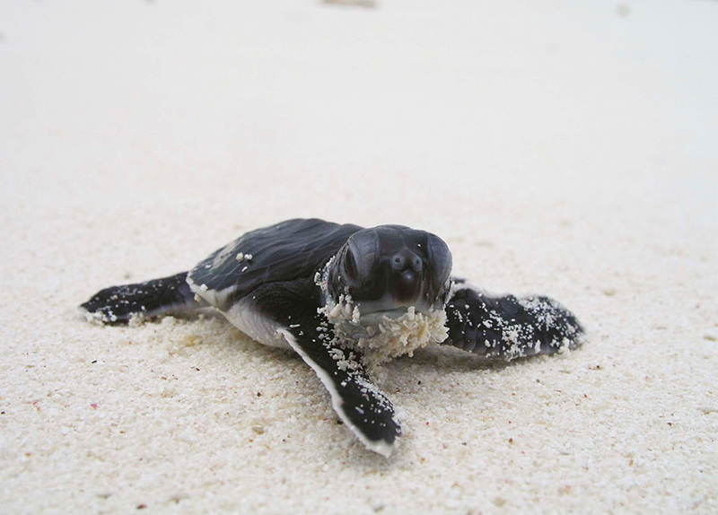
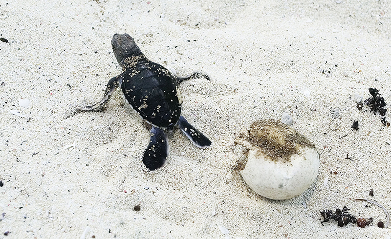
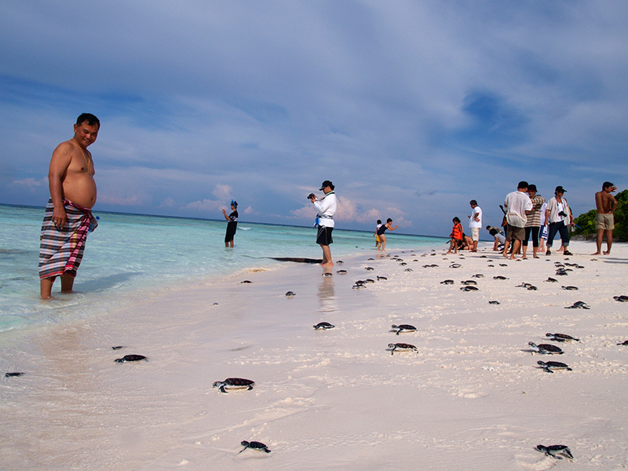

In short
Marine Turtle Foundation is a student-led group founded by Wesley Deklich. We recruited about 100 volunteers, held four events (including a charity volleyball tournament), and raised about $4,500. That money was passed to sea turtle centers in Cancun, Mexico and Florida. We are not a registered 501(c)(3).
About 100 volunteers
Friends, classmates, and community members who helped run events and cleanups
Four events
Including a charity volleyball tournament, beach cleanups, and local fundraisers
$4,500 raised
Passed on to turtle programs in Cancun and Florida, not kept as operating funds
The four events
These are the events we organized. Dates are listed as the years they happened so this page matches what we can actually document here. If you need receipts or recipient contacts for verification, email wesleyd3141@gmail.com.
1. Charity volleyball tournament
A community volleyball tournament used as a fundraiser for sea turtle work. Teams paid to play. Proceeds went into the same pool as our other events and were later sent to turtle centers in Cancun and Florida.

2. Beach cleanup, Playa del Carmen
Volunteer cleanups along the coast of Playa del Carmen. This is hands-on work: trash off the sand, less plastic in the water, and a chance to talk with tourists about nesting beaches.

3. Local community fundraiser
A smaller in-person fundraiser with classmates and family contacts. The goal was simple: get people to show up, donate, and understand where the money was going.

4. Student outreach / additional fundraiser
A fourth event focused on recruiting volunteers and raising the rest of the $4,500 total. This is how we got to about 100 people involved across all four events, not 100 people at a single day.
Where the $4,500 went
We do not run our own hatchery or wildlife hospital. Money raised was passed to existing sea turtle centers:
- Cancun / Riviera Maya, Mexico — turtle conservation programs on the Caribbean coast, including work connected to the Riviera Maya - Tulum program and Flora, Fauna y Cultura de Mexico.
- Florida, United States — sea turtle rescue and nesting-protection centers that receive stranded or nesting animals on the Atlantic and Gulf coasts.
If you are verifying this for admissions or due diligence, the strongest check is to ask us for the recipient names and then confirm with those organizations. We will share that on request. We are not claiming IRS 501(c)(3) status, and donations to MTF itself are not tax-deductible as charitable gifts to a registered U.S. charity.